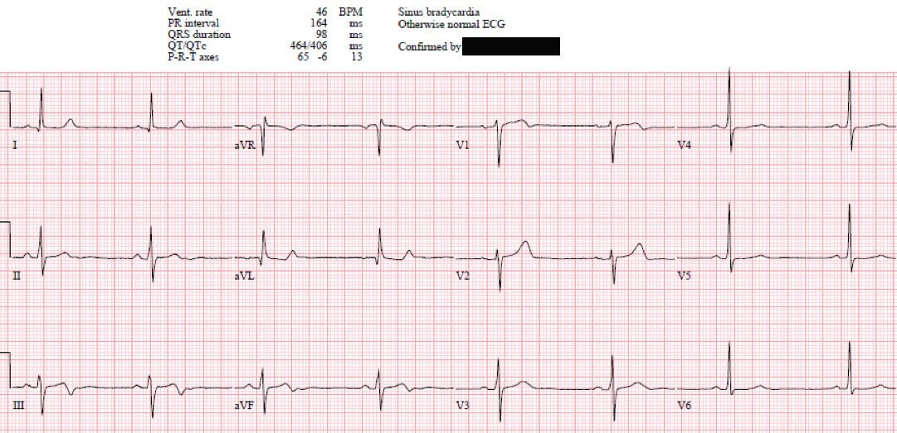
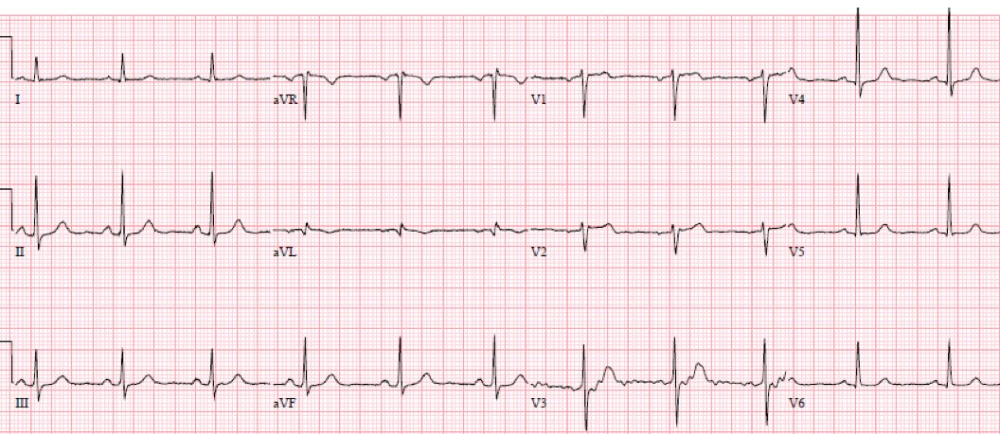
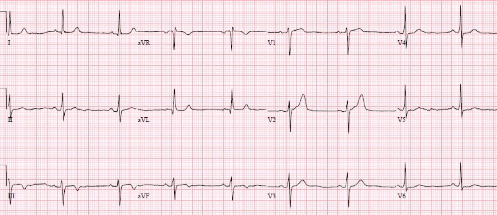
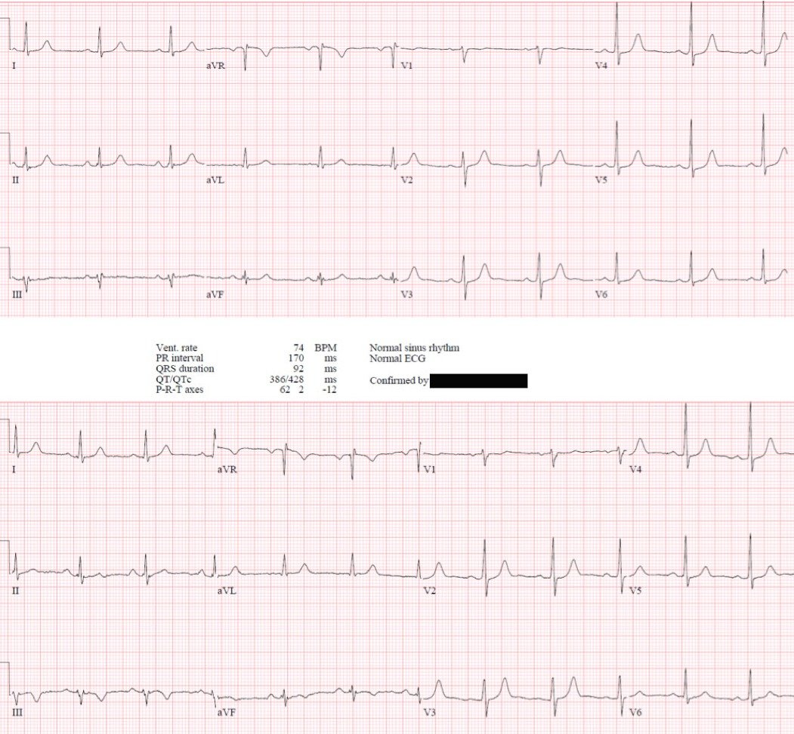
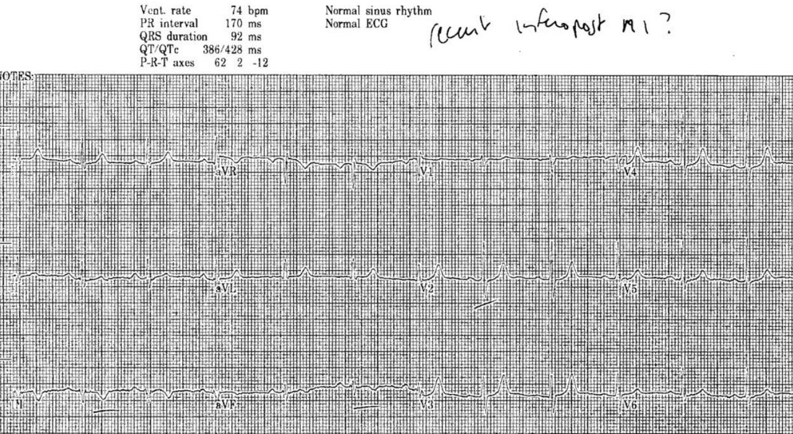
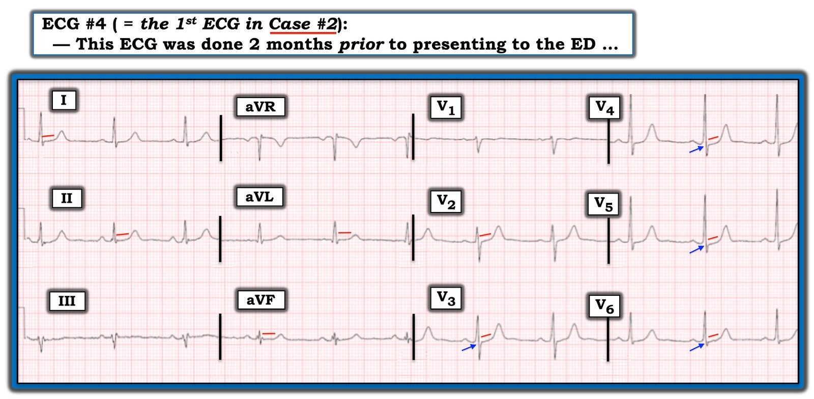

22/04/2022 — Đau ngực, điện tâm đồ ‘bình thường’, ‘troponin bình thường’, điểm HEART và EDACS thấp: Cho xuất viện về nhà? Làm nghiệm pháp gắng sức? Rất nhiều sai sót ở đây.
Bản dịch tiếng Việt của bài "Chest pain, a ‘normal’ ECG, a ‘normal trop’, and low HEART and EDACS scores: Discharge home? Stress test? Many errors here." – Dr. Smith’s ECG Blog. Giữ nguyên toàn bộ 7 hình ảnh của bản gốc.
Bài viết của Jesse McLaren, kèm bình luận của Smith và Grauer
Một bệnh nhân 60 tuổi đến khám vì đau ngực từng cơn, không liên quan gắng sức, kéo dài ba tuần,
không kèm triệu chứng nào khác. Điện tâm đồ được máy tính dán nhãn ‘bình thường’
(bác sĩ tim mạch đọc lại (overread) cũng xác nhận) và troponin I độ nhạy cao (hs-troponin) bình thường với giá trị 11 ng/L (xét nghiệm Abbott Alinity, ngưỡng bình thường là <26 ở nam, <16 ở nữ; xét nghiệm này gần như giống hệt xét nghiệm độ nhạy cao Abbott Architect). Như vậy bệnh nhân thuộc nhóm nguy cơ thấp theo thang điểm HEART và EDACS. Có nên cho
bệnh nhân này xuất viện về nhà không? Còn làm nghiệm pháp gắng sức (stress test) thì sao?


(Thuật toán Marqette 12SL)
Nhịp chậm xoang, dẫn truyền bình thường, trục
bình thường, tăng tiến sóng R bình thường, điện thế bình thường. Có sóng T hai pha
ở III/aVF kèm sóng T dạng xuống/lên soi gương ở aVL, và một
sóng T cao quá mức tương xứng ở V2. Đây là hình ảnh chẩn đoán tái tưới máu
thành dưới-sau.
So sánh với điện tâm đồ cũ dưới đây (ghi 4 năm trước) khẳng định tất cả các thay đổi này
đều mới (và không thể giải thích bằng sự xoay nhẹ của trục trong mặt phẳng
trán, hay do vị trí đặt điện cực V2):


Nếu những sóng T hai pha nguyên phát mới xuất hiện này nằm ở các chuyển đạo
trước tim phía trước, ở một bệnh nhân đã hết đau ngực, có lẽ chúng đã được nhận ra
là “hội chứng Wellens”, liên quan đến hẹp khít LAD. Điều này hẳn đã
dẫn đến việc nhập viện để chụp mạch vành bất kể đau ngực không điển hình hay troponin
âm tính—hoặc thậm chí có thể dẫn đến kích hoạt phòng thông tim (cath lab), vì “Wellens” thường
được gọi là “tương đương STEMI” dù “STEMI” hàm ý tắc mạch còn “Wellens”
hàm ý tái tưới máu (động mạch đang thông). Nhưng vì chúng nằm ở các chuyển đạo dưới-sau nên chúng
đã bị bỏ sót.
Bình luận của Smith: Hội chứng Wellens có nghĩa là gì? Như Jesse đã nói, đây là Wellens thành dưới-sau. Kiểu sóng T đảo ngược như vậy xảy ra y hệt ở các vùng cơ tim khác ngoài thành trước (LAD, Wellens). Nó có nghĩa là, khi bệnh nhân đang đau ngực, đã có một STEMI/OMI không được ghi lại rồi sau đó tự tái tưới máu. Đây là sự thật, dù tôi không biết y văn nào bàn về điều này. Ví dụ, xem ca này: First ED ECG is Wellens’ (pain free). What do you think the prehospital ECG showed (with pain)? (Điện tâm đồ đầu tiên tại khoa cấp cứu là Wellens (hết đau). Bạn nghĩ điện tâm đồ trước viện (lúc còn đau) cho thấy gì?)
Sai sót #1: dùng công cụ phân tầng nguy cơ tại khoa cấp cứu khi điện tâm đồ đã có giá trị chẩn đoán
Bác sĩ cấp cứu đọc điện tâm đồ là “bất thường tái cực
thành dưới không đặc hiệu”. Dựa trên cách đọc này, cùng với
đau ngực không điển hình và troponin âm tính, bệnh nhân có
điểm HEART và EDACS thấp nên được cho xuất viện với aspirin và hẹn tái khám
tim mạch ngoại trú. Tuy nhiên, điện tâm đồ này RẤT đặc hiệu cho hình ảnh Wellens, và phù hợp với hội chứng Wellens; do đó nó ĐẶC HIỆU cho nhồi máu cơ tim cấp
Thang điểm HEART
(1) và EDACS
(2) được thiết kế để phân tầng nguy cơ cho các bệnh nhân đau ngực chưa phân định
tại khoa cấp cứu (ED), nhằm xác định những người có nguy cơ thấp về biến cố tim mạch
chính (MACE) và an toàn để cho xuất viện. Nhưng như Dr. Backus, người tạo ra thang điểm HEART,
đã giải thích trên MDCalc,
“một cạm bẫy nhỏ là người dùng cần có ít nhất một chút kinh nghiệm khai thác bệnh sử đau
ngực và đọc điện tâm đồ để diễn giải hai thành phần này của thang điểm.” Cả hai
thang điểm đều dựa trên cách đọc điện tâm đồ hạn chế: thang điểm HEART
phân loại điện tâm đồ thành “bình thường”, “tái cực không đặc hiệu” và “lệch
đoạn ST đáng kể”, và bệnh nhân được xem là nguy cơ thấp nếu tổng
điểm <4 bất kể thành phần điện tâm đồ; thang điểm EDACS xếp
bệnh nhân vào nhóm nguy cơ thấp nếu điểm <16, troponin âm tính và
điện tâm đồ “không có thay đổi thiếu máu cục bộ mới.”
Bệnh nhân STEMI hiển nhiên bị loại trừ, vì
bệnh nhân không còn là chưa phân định và không còn cần phân tầng nguy cơ
MACE trong tương lai nữa: điện tâm đồ đã phân định họ bằng cách chẩn đoán tắc
mạch vành cấp. Việc loại trừ tương tự cũng nên áp dụng cho bệnh nhân có điện tâm đồ chẩn đoán OMI STEMI âm tính (STEMI(-)OMI) hoặc
tái tưới máu, ngay cả khi điện tâm đồ được dán nhãn “bình thường” (3). Điều này càng quan trọng hơn với những ai dùng thang điểm HEAR không có troponin, cho những bệnh nhân nguy cơ thấp dựa trên các thành phần còn lại.(4)
Sai sót #2: ‘troponin bình thường’ – nhập nhằng giữa mức không phát hiện được và bách phân vị thứ 99
Thang điểm EDACS và HEART nguyên bản yêu cầu xét nghiệm lại troponin,
mà ở bệnh nhân này có lẽ đã tăng và dẫn đến
nhập viện. Nhiều trung tâm hiện dùng thang điểm HEART cải biên chỉ
dùng một giá trị troponin độ nhạy cao, nhưng giá trị này phải dưới giới hạn phát hiện, hoặc dưới một ngưỡng rất thấp đã được thẩm định và định trước, lấy ít nhất ba giờ sau khi khởi phát đau ngực. Nhưng với áp lực phải cho bệnh nhân xuất viện sớm, đang có xu hướng dùng bất kỳ giá trị troponin đơn lẻ nào nằm trong ‘khoảng bình thường.’
Ở ca này, troponin là 11 và được diễn giải là ‘bình thường’ vì dưới bách phân vị thứ 99 (<26 ở nam, <16 ở nữ). Nhưng nó cao hơn giới hạn phát hiện của xét nghiệm này (<2). Trong một nghiên cứu đoàn hệ tiến cứu trên 6304 bệnh nhân, trong đó 782 người bị nhồi máu cơ tim típ 1, ngưỡng troponin 11 chỉ có độ nhạy 93% để loại trừ nhồi máu cơ tim.(5)
Bình luận của Smith: Một giá trị troponin đơn lẻ CHỈ được dùng nếu nằm dưới một ngưỡng cực thấp, thấp hơn rất nhiều so với giới hạn trên tham chiếu (URL) bách phân vị thứ 99. Tại cơ sở của chúng tôi, chúng tôi dùng xét nghiệm hs cTnI Abbott Architect (tương tự Abbott Alinity). Với xét nghiệm này, URL bách phân vị thứ 99 là 16 ng/L ở nữ và 34 ở nam; giới hạn phát hiện (LoD) là 1.9 ng/L ở châu Âu và 3.9 ng/L theo FDA Hoa Kỳ. Y văn ủng hộ loại trừ bằng một giá trị đơn lẻ dưới 5 ng/L nếu lấy máu ít nhất 3 giờ sau khi khởi phát đau (5). Các nghiên cứu ủng hộ việc dùng HEART và EDACS cùng một giá trị troponin đơn lẻ cũng yêu cầu giá trị đó phải dưới một ngưỡng rất thấp, thấp hơn nhiều so với bách phân vị thứ 99, nhưng ngưỡng đó phải được xác định bằng các nghiên cứu trên chính xét nghiệm cụ thể đó.
Vì vậy, cho bệnh nhân này xuất viện dựa trên 1 giá trị troponin dưới bách phân vị thứ 99 là một sai lầm lớn. Các nghiên cứu khác cho thấy, bất kể thời điểm lấy máu, nếu giá trị nằm dưới giới hạn phát hiện (LoD) của xét nghiệm Abbott Architect (ngoài Hoa Kỳ là 1.9 ng/L), giá trị tiên đoán âm (NPV) lớn hơn 99% (9, 10)
Sai sót #3: dùng nghiệm phápgắng sức cho một chỗ hẹp khít đã được điện tâm đồ dự báo
Vài ngày sau khi xuất viện, bệnh nhân khám tim mạch,
bác sĩ tim mạch đọc điện tâm đồ là “nhịp xoang với thay đổi ST không đặc hiệu
thành dưới.” Vì vậy họ hẹn làm nghiệm pháp gắng sức một tuần sau. Đây là một nước đi
rất mạo hiểm, vì gây gắng sức cho một quả tim có chỗ hẹp khít và động (dynamic) có thể gây
nhồi máu cơ tim(6). Điều thú vị là, trong khi các hướng dẫn liệt kê “đau thắt ngực không ổn định nguy cơ cao” là chống chỉ định lâm sàng của nghiệm pháp gắng sức, chúng lại không đề cập đến Wellens hay bất kỳ chống chỉ định
nào trên điện tâm đồ đối với nghiệm pháp gắng sức(7), dù đã có những nghiệm pháp gắng sức được tránh nhờ nhận ra hình ảnh này(8).
Siêu âm tim gắng sức của bệnh nhân cho thấy thiếu máu cục bộ gây ra được (inducible), với giảm động
thành dưới vùng đáy (tương ứng với các thay đổi trên điện tâm đồ). May mắn là bệnh nhân không có
biến chứng nào trong lúc làm nghiệm pháp gắng sức, cũng như trong hai tuần sau đó chờ
chụp mạch vành theo chương trình.
Một tháng sau lần đến khoa cấp cứu đầu tiên, với các cơn
đau ngực ngày càng nhiều, bệnh nhân được chụp mạch vành, phát hiện một tổn thương
động mạch mũ 80% (tương ứng với các thay đổi trên điện tâm đồ) và được đặt stent. Dưới đây là
điện tâm đồ lúc ra viện, cho thấy tái tưới máu đang tiến triển, với sóng T sâu hơn ở thành dưới và
sóng T cao hơn ở V2


Lưu ý các sóng T lớn ở V2
Đây là các sóng T tái tưới máu thành sau (sóng T lớn ở V2 trong giai đoạn hết đau), như Dr. Smith đã mô tả
Wellens’ syndrome of the posterior wall. (Hội chứng Wellens của thành sau.)
Bệnh nhân này cực kỳ may mắn
vì đã không bị tắc lại trong bất kỳ khoảng thời gian nào sau điện tâm đồ đầu tiên này, giữa điện tâm đồ đầu tiên và lần chụp mạch vành một tháng sau đó.
Đây là một bệnh nhân may mắn khác, với
câu chuyện và điện tâm đồ tương tự: 60 tuổi, đau ngực khi gắng sức ba tuần,
đã hết đau khi đến khoa cấp cứu. Dưới đây là điện tâm đồ cũ (ghi hai tháng trước) và điện tâm đồ lúc phân loại (triage)
khi hết đau, cả hai đều được máy tính và bác sĩ tim mạch đọc lại dán nhãn “bình thường”:


(Thuật toán Marqette 12SL)
Một lần nữa có sóng T đảo ngược nguyên phát mới
ở các chuyển đạo dưới, và sóng T cao hơn ở aVL. Cũng có
tăng tiến sóng R sớm mới xuất hiện với R>S ở V2.
Các thay đổi này đã được bác sĩ đọc điện tâm đồ phân loại nhận ra trước khi khám bệnh nhân: đây là bản photocopy điện tâm đồ phân loại gốc ở trên, để cho thấy bác sĩ đã nhận ra tái tưới máu thành dưới-sau ngay trong thời gian thực, và rằng những dấu hiệu này có thể học được


Bệnh nhân được chuyển khám tim mạch nhưng được nhập viện với chẩn đoán “NSTEMI” và được chụp mạch vành 3 ngày sau, phát hiện RCA tắc 95%. May mắn là động mạch đã không tắc lại trong bất kỳ khoảng thời gian nào giữa lúc nhập viện và lúc chụp mạch vành, với troponin I đỉnh 1000 ng/L (bình thường <26 ở nam, <16 ở nữ).
Nhưng những ca này cho thấy những nguy hiểm tiềm tàng của việc chậm nhận ra và chậm điều trị tái tưới máu thành dưới
Điều cần nhớ
1. Thang điểm HEART và EDACS hữu ích để phân tầng nguy cơ
bệnh nhân đau ngực, nhưng chúng phụ thuộc vào việc đọc điện tâm đồ chính xác: điểm thấp không áp dụng được nếu điện tâm đồ cho thấy OMI STEMI dương tính (STEMI(+)OMI), và cũng không nên dùng cho
STEMI(-)OMI hay OMI đã tái tưới máu
2. Áp lực phải cho bệnh nhân xuất viện sớm có thể dẫn đến việc dựa vào một giá trị troponin đơn lẻ dưới bách phân vị thứ 99, và việc dùng các cụm như ‘troponin bình thường’ hay ‘troponin âm tính’ khiến điều này bị nhập nhằng với mức dưới giới hạn phát hiện. Ghi rõ giá trị cụ thể thì chính xác hơn, dựa trên bằng chứng hơn và an toàn hơn
3. Thay vì dùng các thuật ngữ như “STEMI” và
“Wellens”, sẽ hữu ích hơn khi mô tả bệnh lý nền và hình ảnh
điện tâm đồ: nhồi máu cơ tim do tắc (Occlusion MI), và sóng T đảo ngược do tái tưới máu
4. Hãy học các dấu hiệu tái tưới máu: như Dr. Smith
nói, không phải điện tâm đồ không đặc hiệu; mà là người đọc
5. Tái tưới máu tự phát có nguy cơ
tắc lại tự phát: những bệnh nhân này cần được xử trí tích cực và chụp mạch vành
khẩn, chứ không phải làm nghiệm pháp gắng sức
6. Điện tâm đồ có thể được máy tính dán nhãn ‘bình thường’
(và được bác sĩ tim mạch xác nhận) ngay cả khi có dấu hiệu chẩn đoán tắc mạch hoặc
tái tưới máu
Tài liệu tham khảo
1.
Backus BE, Six AJ, Kelder JC, và cs. A
prospective validation of the HEART score for chest pain patients at the
emergency department. Tạp chí Int J Cardiol, 2013
2.
Shin YS, Ahn S, Kim YJ. External validation of
the emergency department assessment of chest pain score accelerated diagnostic
pathway (EDACS-ADP). Tạp chí Am J Emerg Med, 2020
3.
Bracey A, Meyers HP, Smith SW. Emergency
physicians should interpret every triage ECG, including those with a computer
interpretation of “normal.” Tạp chí American Journal of Emergency Medicine, 2022
4. Moumneh T, Sun BC, Baecker A, và cs. Identifying patients with low risk for acute coronary syndrome without troponin testing: validation of the HEAR score. Tạp chí Am J Med, 2021
5. Shah ASV, Anand A, Sandoval Y, và cs. High-sensitivity cardiac troponin I at presentation in patients with suspected acute coronary syndrome: a cohort study. Tạp chí Lancet, 2015
6.
Patel J, Alattar F, Koneru J, và cs.
ST-elevation myocardial infarction after pharmacologic persantine stress test
in a patient with Wellens’ syndrome. Tạp chí Case Rep Emerg Med, 2014
7.
Gulati M, Levy P, Mukherjee D, và cs. 2021
AHA/ACC/ASE/CHEST/SAEM/SCCT/SCMR guideline for the evaluation and diagnosis of
chest pain: a report of the American College of Cardiology/American Heart
Association Joint Committee on Clinical Practice Guidelines. Tạp chí JACC, 2021
8.
Yazdi D, Sharim J. A nearly stressful
situation—a case of Wellens syndrome. Tạp chí JAMA Intern Med, 2019
9. Sandoval Y, Smith SW, Love SA, Sexter A, Schulz K, Apple FS. Single High-Sensitivity Cardiac Troponin I to Rule Out Acute Myocardial Infarction. Am J Med [Internet] 2017;130(9):1076–83.e1. Có tại: http://dx.doi.org/10.1016/j.amjmed.2017.02.032
10. Greenslade J, Cho E, Van Hise C, và cs. Evaluating Rapid Rule-out of Acute Myocardial Infarction Using a High-Sensitivity Cardiac Troponin I Assay at Presentation. Clin Chem [Internet] 2018;64(5):820–9. Có tại: http://dx.doi.org/10.1373/clinchem.2017.283887

===================================
BÌNH LUẬN CỦA TÔI, bởi KEN GRAUER, MD (22/4/2022):
===================================
Luôn khó mà cố gắng “tái dựng sự việc” khi mình không có mặt ở đó. Nếu một số thông tin không có trong hồ sơ bệnh án — thì chúng ta chỉ còn cách suy luận các khả năng dựa trên dữ liệu đang có và những hành động đã được thực hiện.
- Lý do vì sao việc trải qua quá trình tự vấn sâu sắc này lại quan trọng — là để chúng ta có thể học hỏi từ những sai lầm đã mắc phải, nhằm tối ưu hóa việc chăm sóc trong tương lai.
Phần trình bày xuất sắc ở trên của Dr. McLaren về 2 ca bệnh có cùng một “chủ đề” — kèm những bình luận sâu sắc của Dr. Smith. Tôi sẽ đề cập thêm một vài khía cạnh về đánh giá và xử trí — tập trung vào điều mà tôi cho là một thiếu sót cũng quan trọng không kém việc đọc sai điện tâm đồ — đó là những thiếu sót trong Bệnh sử y khoa mà chúng ta có thể suy ra được.
CA BỆNH #1:
- Dr. Smith và Dr. McLaren đã nêu một điểm rất hay khi nhấn mạnh rằng “hội chứng Wellens” không chỉ xảy ra ở các chuyển đạo trước tim. Mặc dù vùng phân bố của LAD là nơi hay gặp nhất các thay đổi ST-T tái tưới máu của hội chứng Wellens — ca thứ 1 này minh họa hình ảnh của hội chứng Wellens ở các chuyển đạo dưới–sau.
Một điều bị quá-nhiều-bác-sĩ-lâm-sàng bỏ qua — là tầm quan trọng của Bệnh sử trong chẩn đoán “hội chứng Wellens”. Bắt buộc phải có bệnh sử đau ngực trước đó mà nay đã hết.
- Điểm MẤU CHỐT: Bệnh sử mà chúng ta được cung cấp ở ca #1 là “3 tuần đau ngực từng cơn không liên quan đến gắng sức, không có triệu chứng kèm theo”. Nhưng không chỉ điện tâm đồ ban đầu bị đọc sai — việc bệnh sử được tóm tắt là “3 tuần đau ngực từng cơn” cho thấy các bác sĩ điều trị đã không hiểu cả những dấu hiệu điện tâm đồ dự kiến lẫn diễn tiến thời gian bắt buộc của triệu chứng khi có một quá trình như xảy ra trong “hội chứng Wellens” thực sự.
- Điều này có ý nghĩa — vì nó làm mất hiệu lực thành phần “Bệnh sử” của thang điểm HEART và EDACS vốn được cho là “nguy cơ thấp”. Theo Dr. McLaren và Dr. Smith — điện tâm đồ ban đầu ở ca #1 cho thấy một biến cố đã xảy ra. Câu hỏi là KHI NÀO? Dù có giá trị chẩn đoán — các thay đổi điện tâm đồ trên bản ghi ban đầu ở ca #1 (cũng như Bệnh sử) gợi ý rằng thời điểm xảy ra biến cố có thể là vài ngày, thậm chí tới 2-3 tuần trước đó — trong trường hợp đó, không nhất thiết phải kỳ vọng Troponin tăng.
- ĐIỀU GÌ đã đưa bệnh nhân thứ 1 này đến khoa cấp cứu vào ngày ông nhập viện — tức là không dưới 3 tuần sau khi khởi phát triệu chứng? Dù hoàn toàn hiểu rằng chúng ta không thể viết một “bệnh sử dài như cuốn sách” cho mọi bệnh nhân — điều gây chú ý vì sự vắng mặt của nó là bệnh sử không hề nhắc đến triệu chứng vào ngày bệnh nhân đến viện (và vào thời điểm ghi điện tâm đồ ban đầu). Việc đọc điện tâm đồ lâm sàng tối ưu phụ thuộc vào sự đối chiếu với thời điểm, thời gian kéo dài và mức độ nặng của triệu chứng.
Về việc làm nghiệm pháp gắng sức ( = ETT = nghiệm pháp dung nạp gắng sức (Exercise Tolerance Test)) hơn một tuần sau khi ra viện một chút (như đã được lên lịch ở đây) — Việc này không nhất thiết là chống chỉ định. Suy cho cùng, một phần của đánh giá “trước khi ra viện” thường quy sau nhồi máu cơ tim cấp từng là ETT mức gắng sức thấp.
- Tôi luôn tin rằng không làm ETT mức gắng sức thấp sau một nhồi máu cơ tim đã hoàn tất (ổn định) trong điều kiện được theo dõi (tức là trong bệnh viện) trước khi bệnh nhân về nhà — thì chẳng khác nào để bệnh nhân tự làm “nghiệm pháp gắng sức không được theo dõi” của riêng mình khi về đến nhà.
- Dù vậy — kinh nghiệm của tôi qua 3 thập kỷ giảng dạy về nghiệm pháp gắng sức ngoại trú luôn là: phần khó nhất để thực hiện đúng một ETT — là biết mức độ “đẩy” (khích lệ) bệnh nhân — và — học được KHI NÀO phải dừng nghiệm pháp. Tôi luôn ấn tượng về việc một bệnh nhân có thể nhanh chóng chuyển từ dễ dàng chịu đựng hoạt động trên thảm lăn — sang gần như gục ngã chỉ trong chốc lát sau đó.
- Vì vậy — làm ETT cho bệnh nhân ở ca #1 này không nhất thiết là chống chỉ định NẾU nghiệm pháp được thực hiện với sự thận trọng thích đáng (mà ở ca #1 nghĩa là phải nhận thức đầy đủ rằng bệnh nhân này vừa mới có một biến cố!).
Có những ETT “dương tính” — và có những ETT “DƯƠNG TÍNH”. Chúng ta được biết rằng siêu âm tim gắng sức đã thực hiện cho thấy bằng chứng khách quan của thiếu máu cục bộ gây ra được (inducible) (có vẻ đã được xác nhận bằng cả rối loạn vận động thành lẫn thay đổi điện tâm đồ).
- Đáng lo ngại vì vắng mặt trong bệnh sử mà chúng ta được cung cấp là không hề nhắc đến việc KHI NÀO trong lúc siêu âm tim gắng sức (tức là vào thời điểm nào và ở mức hoạt động nào trong nghiệm pháp) thì thấy “thiếu máu cục bộ gây ra được”? Bằng chứng khách quan về thiếu máu cục bộ gây ra được này có kèm theo đau ngực hay không?
- Nếu bằng chứng khách quan trên điện tâm đồ và siêu âm tim về thiếu máu cục bộ gây ra được xuất hiện trong vài phút đầu của gắng sức mức thấp — thì ngay cả NẾU các bác sĩ lâm sàng không nhận ra rằng điện tâm đồ ban đầu của bệnh nhân này có giá trị chẩn đoán một biến cố gần đây — thì cũng KHÔNG ĐỜI NÀO bệnh nhân này lại phải chờ 2 tuần để được “chụp mạch vành chương trình”. Các bác sĩ tim mạch mà tôi từng làm việc cùng hẳn đã cho bệnh nhân đó nhập viện để thông tim ngay ngày hôm sau.
- Và NẾU hóa ra là mặc dù có thiếu máu cục bộ gây ra được (trên siêu âm tim và điện tâm đồ) ở mức gắng sức thấp, bệnh nhân này lại không hề đau ngực — thì đây chính là định nghĩa của thiếu máu cục bộ “thầm lặng”. Điều này có thể giải thích vì sao ngay từ đầu bệnh nhân này phải mất 3 tuần mới đến khoa cấp cứu (vì ít nhất là đôi khi — hoặc có lẽ phần lớn thời gian, bệnh nhân có thể không nhận biết được triệu chứng trong các hoạt động sinh hoạt hằng ngày). Trong trường hợp đó — điều gì có thể xảy ra với tất cả các cơn thiếu máu cục bộ “thầm lặng” gây ra được (tức là không có triệu chứng) chắc chắn sẽ xảy ra trong 2 tuần cho tới khi cuối cùng cũng được thông tim “chương trình”?
XIN NÓI RÕ: Tôi không nói rằng lẽ ra nên làm nghiệm pháp gắng sức cho bệnh nhân ở ca #1 này. Lẽ ra phải chú ý hơn đến những điều cần tìm trong bệnh sử — và lẽ ra phải nhận ra các thay đổi tái tưới máu trên điện tâm đồ do nhồi máu gần đây — để việc chăm sóc tối ưu sẽ bao gồm thông tim kịp thời kèm can thiệp dự phòng. Tôi chỉ đơn giản nói rằng khi được thực hiện đúng cách — nghiệm pháp gắng sức có thể được làm an toàn 10 ngày sau một nhồi máu cơ tim ổn định.
=====================
CA BỆNH #2:
Bệnh sử ở ca thứ 2 là “3 tuần đau ngực khi gắng sức” — ở bệnh nhân này, người đã “hết đau khi đến” khoa cấp cứu.
- Chi tiết của bệnh sử một lần nữa bị thiếu — vì đã có một điện tâm đồ được ghi 2 tháng trước đó, nhưng chúng ta không biết lý do TẠI SAO điện tâm đồ trước đó được ghi.
- Điểm MẤU CHỐT: Không biết gì về tiền sử bệnh của bệnh nhân 60 tuổi này — câu chuyện mà chúng ta được cung cấp (tức là 3 tuần đau ngực khi gắng sức — nhưng hết đau khi đến khoa cấp cứu) — chính là định nghĩa của đau thắt ngực (angina pectoris). Và NẾU đây là lần thứ 1 người bệnh 60 tuổi này bị đau ngực khi gắng sức — thì điều này phù hợp với định nghĩa của đau thắt ngực “không ổn định”.
Dr. McLaren đã giải thích ở trên các dấu hiệu điện tâm đồ mới trong ca thứ 2 này, một lần nữa cho thấy các thay đổi tái tưới máu dưới-sau do một biến cố gần đây — điều này được xác nhận bởi Troponin dương tính rõ rệt và hẹp RCA 95% khi thông tim vài ngày sau đó.
- Nhưng tôi muốn bình luận về điện tâm đồ ban đầu của bệnh nhân thứ 2 này — vốn có vẻ đã được đọc là “bình thường” (Hình 1).


Suy nghĩ của tôi về điện tâm đồ ở Hình 1:
Như đã nói — chúng ta không biết bệnh sử tại thời điểm ghi điện tâm đồ ở Hình 1. Chúng ta hoàn toàn không biết TẠI SAO điện tâm đồ này được ghi. Nhưng có vẻ nó đã được đọc là “bình thường” — và đó là một sai lầm.
- Nhịp xoang tần số khoảng ~65 lần/phút. Các khoảng (PR, QRS, QTc) và trục bình thường. Không có lớn các buồng tim.
- Về Thay đổi Q–R–S–T — Có một sóng q rất nhỏ ở chuyển đạo aVL. Tăng tiến sóng R bình thường. Chính các thay đổi ST-T mới là điều đáng lo ngại.
- Đoạn ST bình thường có dạng dốc lên nhẹ nhàng cho tới khi hòa vào sóng T gần như không nhận thấy được. Thay vào đó — có hiện tượng đoạn ST thẳng đuỗn tinh tế-nhưng-có-thật ở nhiều chuyển đạo trong Hình 1 (được minh họa bằng sơ đồ với các đường song song màu ĐỎ).
- Nếu có thì — thường có ST chênh lên nhẹ (bình thường) ở chuyển đạo V2 và V3. Không chỉ mức ST chênh lên nhẹ bình thường này bị mất ở 2 chuyển đạo này — mà còn có điểm J chênh xuống bắt đầu từ chuyển đạo V3 — và kéo dài tới chuyển đạo V6 (mũi tên XANH DƯƠNG).
NHẬN ĐỊNH: Phải thừa nhận các thay đổi tôi mô tả là tinh tế — nhưng chúng là có thật — và chúng xuất hiện ở không dưới 10/12 chuyển đạo trong Hình 1. Đơn giản là bình thường bạn không nên thấy ST chênh xuống như chúng ta thấy ở đây trong các chuyển đạo V3 đến V6.
- Chúng ta không được biết liệu bệnh nhân này có triệu chứng hay không tại thời điểm ghi điện tâm đồ ở Hình 1. Nhưng chúng ta biết rằng 5 tuần sau ông có cơn đau thắt ngực điển hình, kéo dài thêm 3 tuần nữa cho tới khi cuối cùng ông đến khoa cấp cứu.
- Khai thác bệnh sử là cả một “nghệ thuật”. Có rất nhiều cách để đặt câu hỏi. NẾU thực tế bệnh nhân ở ca #2 này đã có triệu chứng đau thắt ngực điển hình tại thời điểm ghi điện tâm đồ ở Hình 1 — thì điều này lẽ ra phải thúc đẩy ít nhất là một nghiệm pháp gắng sức nào đó (nếu không phải là thông tim) — mà nếu được thực hiện, có thể đã ngăn ngừa được ổ nhồi máu lớn mà ông gặp phải sau đó.